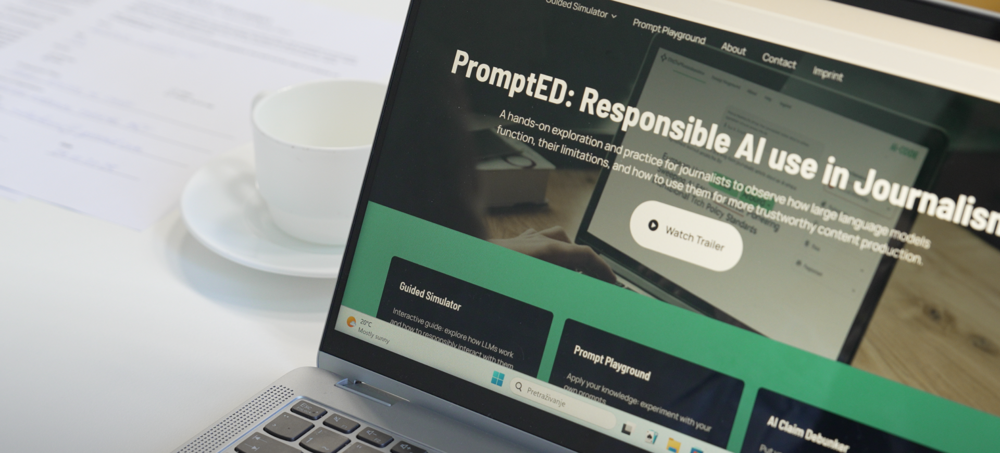
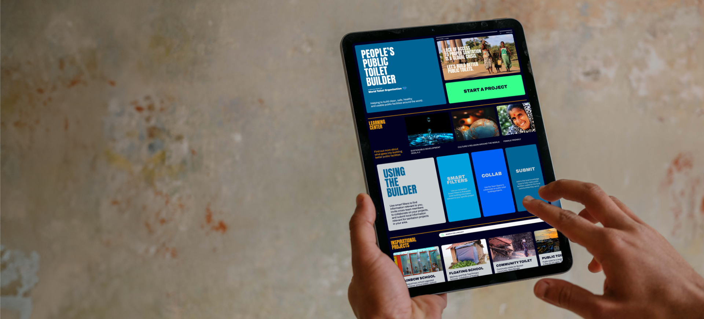
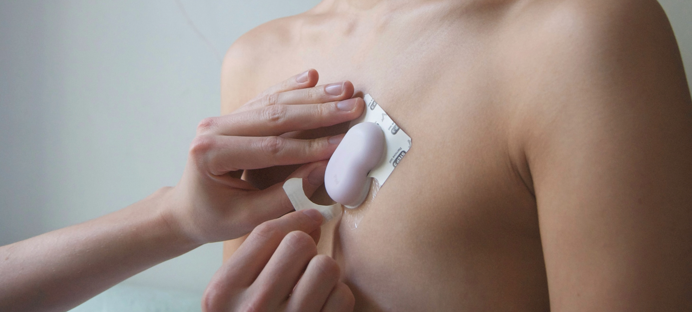
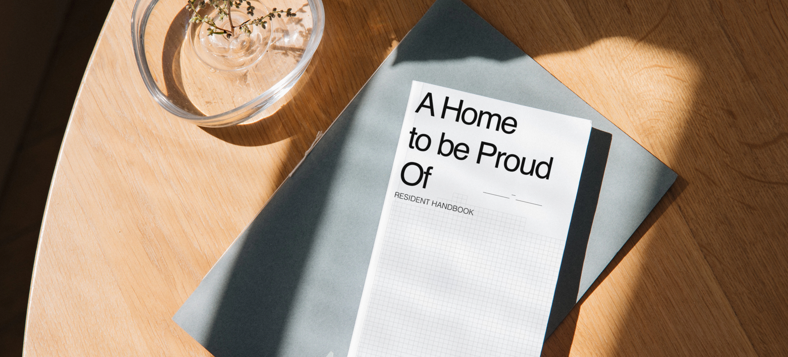

PromptED
Empowering Media Professionals against Disinformation

I'm an engineer-turned-designer passionate about shaping an inclusive world. Through research and exploration, I create impactful solutions grounded in real experiences.
Berlin, Germany
Empowering Media Professionals against Disinformation

The world's first standardised compendium for toilet design

Monitoring Symptoms of Chronic Fatigue Syndrome

Increasing Access to Resources in Social Housing Developments

Strategic Design Researcher
Apr 2024 – Present
European Institute for Participatory Media
Strategic Designer
Jun 2022 – Feb 2023
Design for Good x World Toilet Organisation
MA / MSc Global Innovation Design
2021 – 2023
Royal College of Art | Imperial College London
Thesis: HMW alleviate relational burden on familial care pairs
BEng Manufacturing & Mechanical Engineering
2017 – 2021
University of Warwick, intercalated with TU Darmstadt